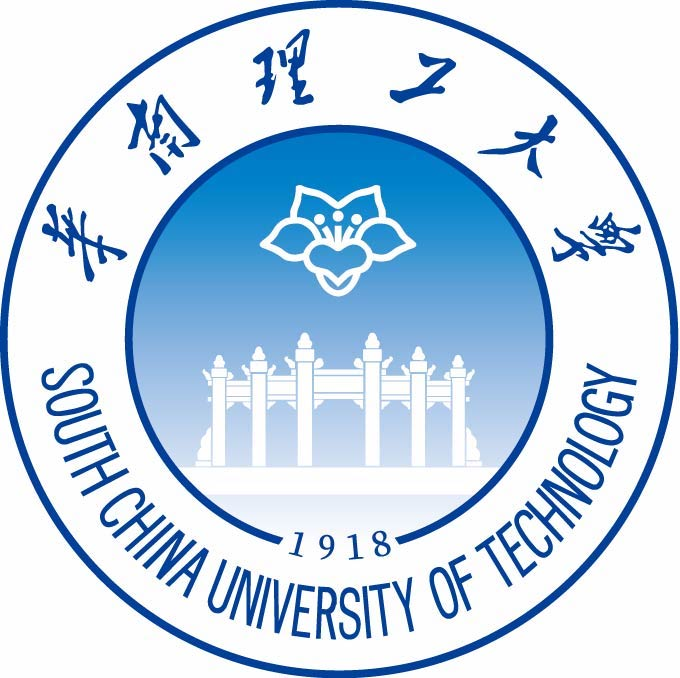

Research Intern
Microsoft Research
Working on diffusion large language models for planning, with an emphasis on improving model reasoning and generation.
Advised by Dr. Fangkai Yang and Dr. Lu Wang.

Machine Learning Engineer · AI Researcher
I build efficient and interpretable generative AI systems, with a focus on diffusion models, scientific machine learning, and model reasoning.
I am currently a Research Intern at Microsoft Research and Westlake University. Previously, I worked with researchers at UC Berkeley's BAIR on foundation models and scientific ML agents. I received my B.Eng. in Artificial Intelligence from South China University of Technology.
Diffusion Language Models
Efficient Generative AI
Scientific Machine Learning
Model Interpretability
Where I have worked
Research and engineering across generative AI, ML systems, and scientific computing.
Research Intern
Working on diffusion large language models for planning, with an emphasis on improving model reasoning and generation.
Advised by Dr. Fangkai Yang and Dr. Lu Wang.
Research Intern
Developing discrete diffusion models with improved efficiency and interpretability.
Advised by Prof. Tailin Wu.
Undergraduate Research Assistant
Developed foundation models for scientific computing and SciML agents for automatic numerical code generation.
Advised by Prof. Michael Mahoney and Dr. Amir Gholami.
Research Intern
Worked on learning-based simulation and control for PDEs and complex physical systems.
Advised by Prof. Tailin Wu.

Student Research Project Lead
Led a student research project on biometric recognition for natural human-computer interaction.
Advised by Prof. Zhanpeng Jin and Prof. Yang Gao.
Academic background
2024 — 2025
EECS Visiting Student
2021 — 2025
B.Eng. in Artificial Intelligence
Selected highlights
A compact selection of scholarships, technical awards, and competitions.
Let's connect
I am interested in machine learning engineering opportunities involving generative models, model efficiency, and AI systems.
xiangzhengzx@outlook.com